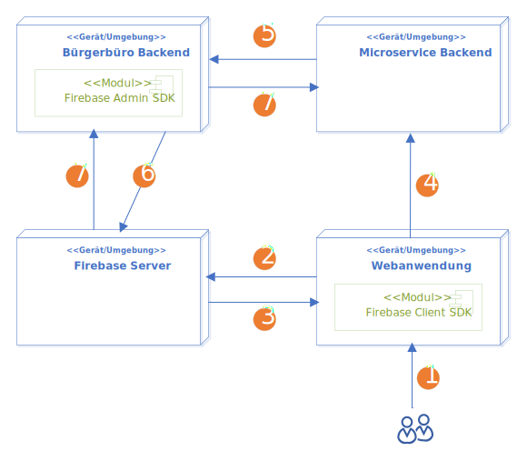
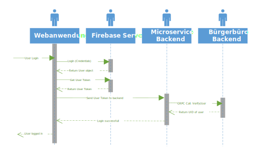
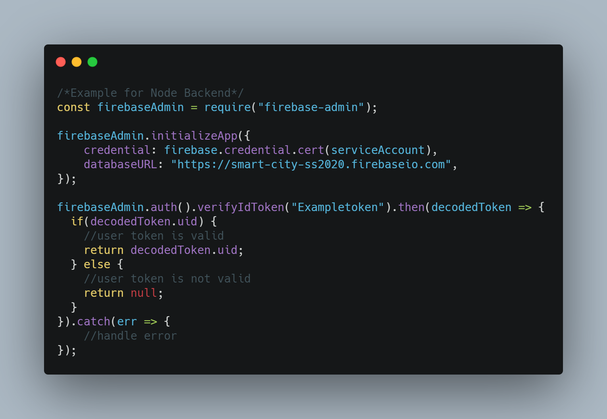
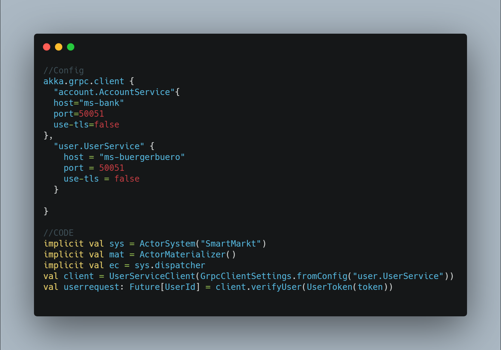
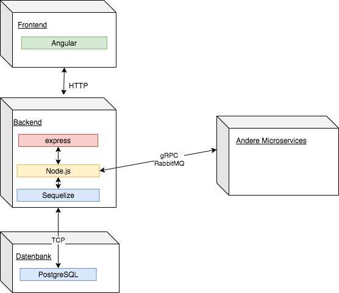

class: center, middle # Smart-City --- # Inhalt 1. Vorstellung 2. Neue Stadt, neues Glück 3. Romantischer Abend 4. Tierattacke 5. Sport ist Mord 6. Bad Day 7. Zentrale Themen 8. Lessons Learned --- class: center, middle # Vorstellung --- # Vorstellung - Kleinstadt - einzelne Dienste umgesetzt --- class: center, middle # Neues Stadt, neues Glück --- # Neue Stadt, neues Glück ## Bürgerbüro ### Allgemein - Zentraler Service innerhalb der Smart City - Anlaufstelle für alle Bürger ### Features - Nutzerverwaltung (Registrierung, Datenverwaltung, Konto deaktivieren) - Schwarzes Brett(digitale Pinnwand) um aktuelle Informationen darzustellen (Bürger und Dienstleister) - Mitarbeiter Bereich (Aushänge freischalten) - Admin Bereich (Mitarbeiter einstellen und entlassen) --- # Neue Stadt, neues Glück ## Bürgerbüro .center[<img src="img/SWArchitecture_Buergerbuero.svg" width="80%">] --- # Neue Stadt, neues Glück ## Straßenverkehrsamt --- # Neue Stadt, neues Glück ## Bank --- class: center, middle # Romantischer Abend --- # Romantischer Abend ## Restaurant --- # Romantischer Abend ## Parkplatz --- # Romantischer Abend ## Ordnungsamt --- class: center, middle # Tierattacke --- # Tierattacke ## Supermarkt --- # Tierattacke ## Tierarzt --- # Tierattacke ## Hausarzt --- class: center, middle # Sport ist Mord --- # Sport ist Mord ## Fitnessstudio --- # Sport ist Mord ## Rettungsdienst --- # Sport ist Mord ## Krankenhaus --- class: center, middle # Bad Day --- # Bad Day ## ÖPNV --- class: middle, center # Zentrale Themen --- ## Kubernetes --- ## CI/ CD --- ## Authentifizierung - Übersicht .center[] --- ## Authentifizierung - Ablauf .center[] --- ## Firebase Admin SDK .center[] --- ## Firebase Client SDK .center[<img src="img/FirebaseClientSDK.png" width="80%">] --- ## Messaging .center[<img src="img/fanout-exchange.png">] --- ## Messages senden .center[<img src="img/messaging_send.png" width="80%">] --- ## Messages empfangen .center[<img src="img/messaging_receive.png" width="80%">] --- ## Proxy --- class: middle, center --- class: middle, center # Microservice --- ## Supermarkt .center[<img src="img/supermarkt_sa.png" width="80%">] --- ## Supermarkt GRPC .center[] --- ## Krankenhaus .center[] --- # Lessons Learned --- # Lessons Learned - Github Actions verglichen mit Gitlab CI angenehmer zu nutzen - sichere CI / CD - Pipelines mit Github Actions erstellen - docker und docker-compose in lokalen Entwicklungsumgebung - GO als Alternative für C++ - GO hat interessante Ansätze - kein einfacher Einstieg in GO --- # Lessons Learned - Umgang mit gRPC - Einrichtung von gRPC in verschiedenen Techniken - gRPC funktioniert nicht mit Django -> an Doku nur ein nicht funktionierendes getting strted - Umgang mit Ruby(Sinatra) - Umgang mit Vue, Vue CLI und Vuex --- # Lessons Learned - Meetings häufig kürzer, Small-Talk fällt weg - persönlicher Austausch fehlt - Absprachen im persönlichen Kontakt einfacher, vor allem wenn man sich nicht kennt - Erfahrungen um Zeitmanagement zu verbessern - einfacher per Bildschirm-Share Inhalte zu zeigen - Durch Lockdown: persönlicher Ausgleich fehlte, hatte hohen Einfluß auf Arbeitsmotivation